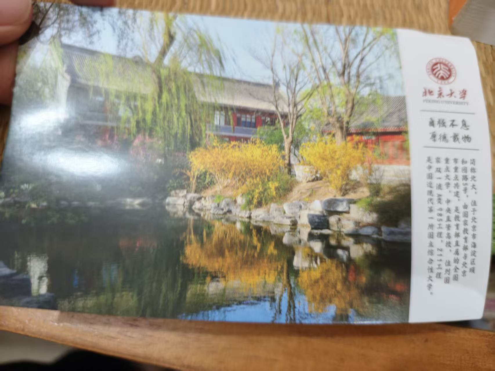
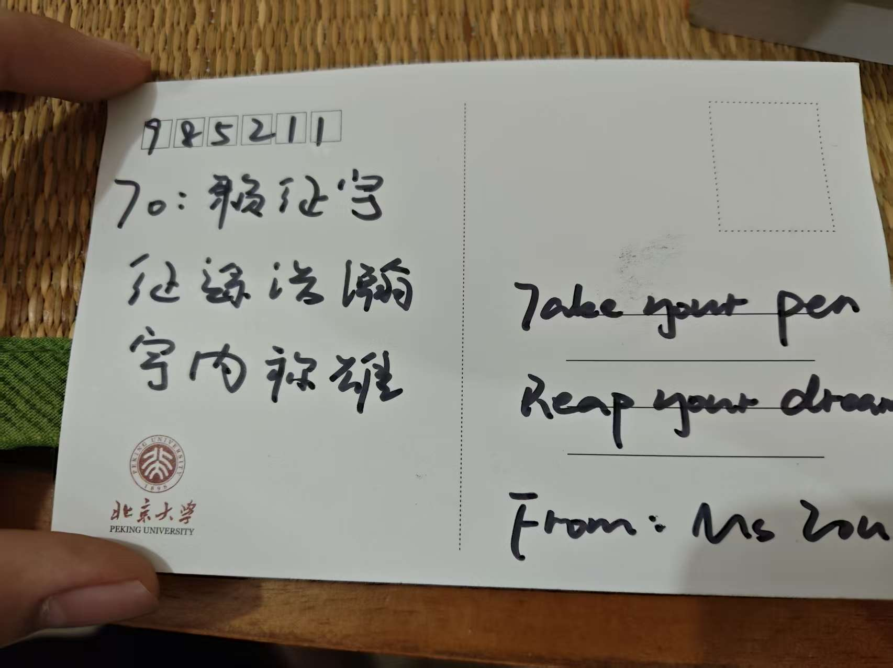
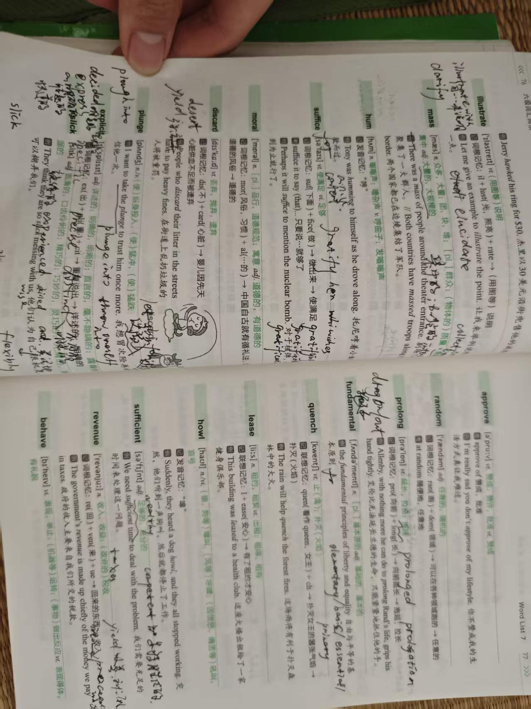
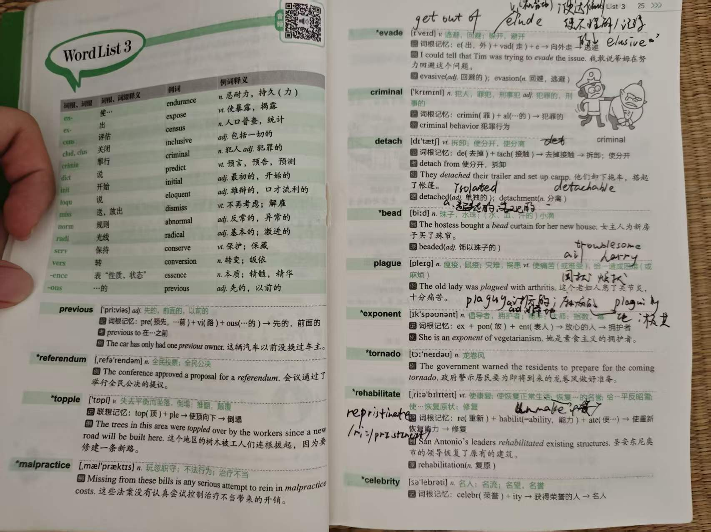
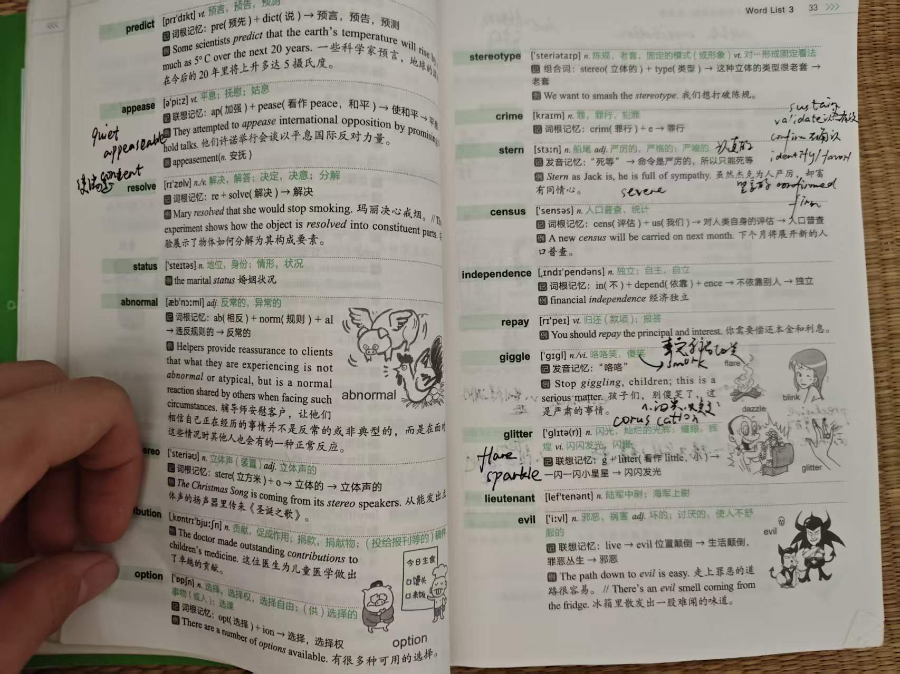
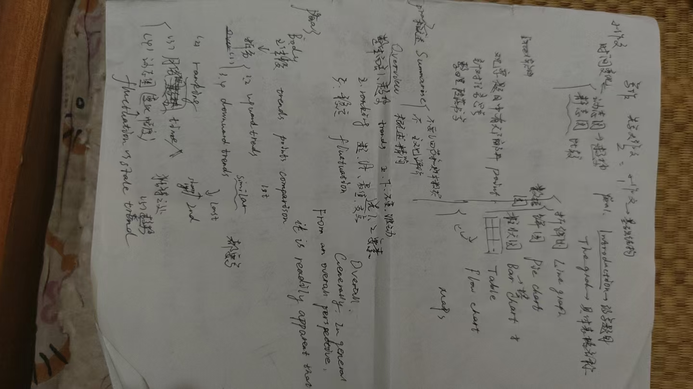
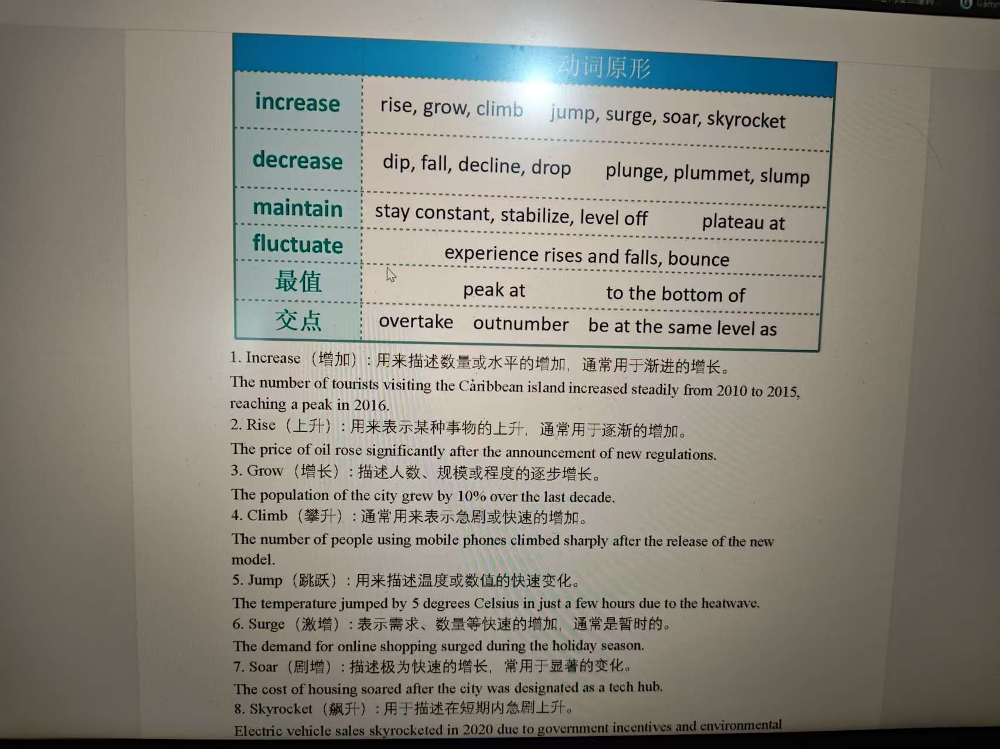
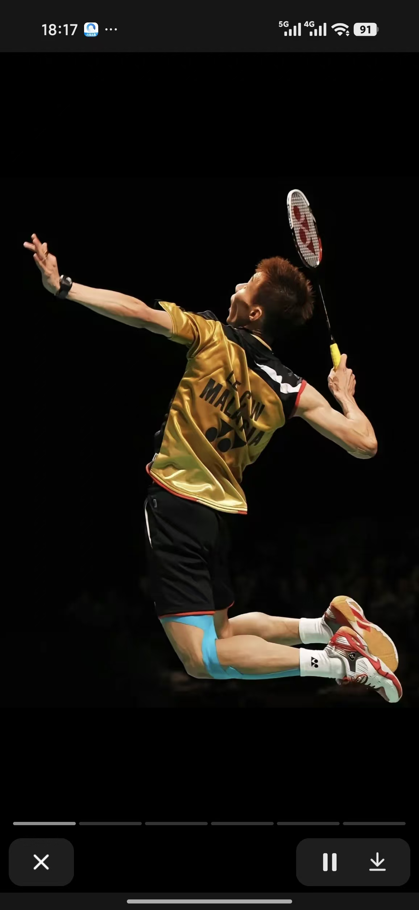
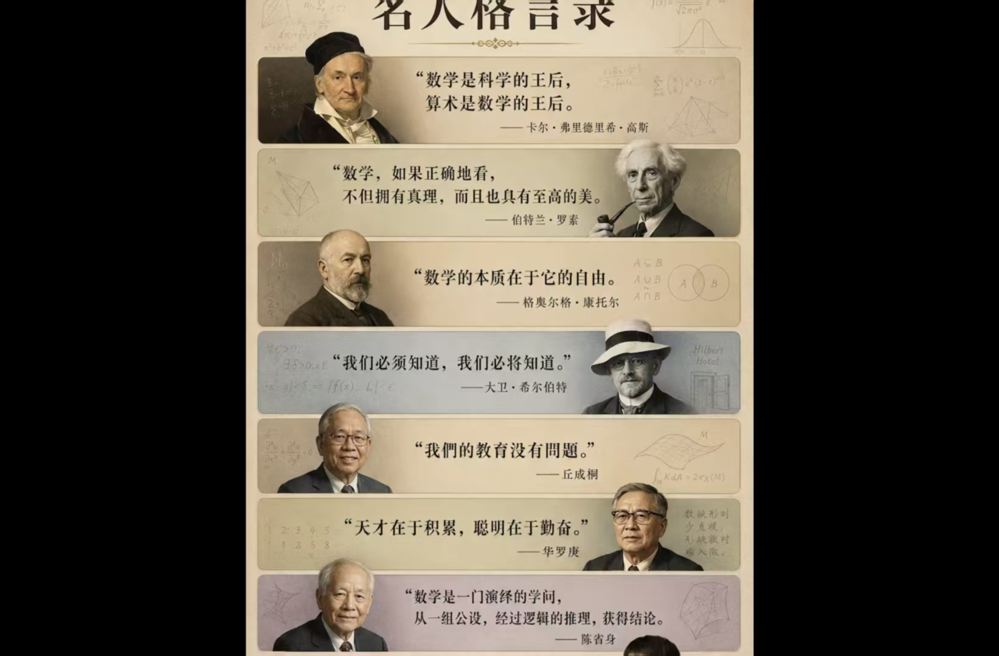

面对陌生问题，主动学习
首次参加机器鱼仿真竞赛，查阅路径规划资料、研究鳍角与推力，再尝试用代码实现。
西南交通大学人工智能专业 2026 级本科生。对新事物保持好奇与接纳，喜欢在已有框架之下探索新的可能性，也愿意主动寻找更高效率的工具完成创造性任务。我希望未来能够长期把热爱与汗水投入人工智能领域，把数学、代码、工程能力、AI 工具与创造力真正连接起来。
首次参加机器鱼仿真竞赛，查阅路径规划资料、研究鳍角与推力，再尝试用代码实现。
记录多轮仿真用时，同时关注速度和稳定性，比较调整前后的表现。
从资料研究到千行代码，目前取得 14.63 秒仿真成绩，仍在继续优化。
本科。计划系统学习高等数学、线性代数、概率统计、数据结构、机器学习、深度学习等课程，并通过项目建立工程能力。
高中阶段开始主动接触微积分、线性代数等内容；英语词汇量逐步向六级方向扩展，并学习过雅思课程。
学习 Python、C 语言、Web 前端；用 AI 进行代码生成、调试、创作与效率工具探索，偏爱 Vibe Coding 这类能提高创造效率的工作方式，同时保持视频与互联网内容创作实践。我的重点不是追逐工具本身，而是探索“框架之下还能发生什么”。
英语老师送的两张明信片，和我背单词、练写作时留下的一页页笔记，都是这门语言陪我成长的证据。


从六级、考研词汇书到图表作文的手写整理，这些照片记录了我每天背单词、记搭配、练写作的真实过程。





来自英语老师的期许。英语不仅是考试能力，也是一扇进入全球技术资料、论文、课程与创作者世界的窗口。

略懂一点 · 持续练习即使失败，也要以最漂亮的姿态挥出下一拍。
当身体撑不住时，意志会带你杀出重围。

我将永远砥砺于粗粝的地表，面前是世界闻名的汪洋巨海，头顶的天空是一道磅礴的彩虹。
微信点击复制，邮箱点击发邮件。